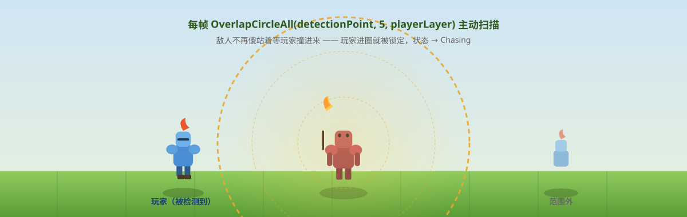
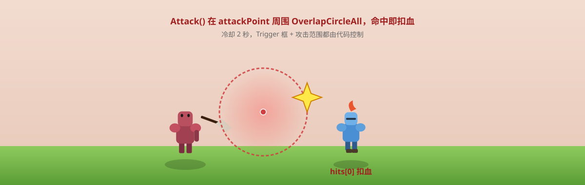

一句话说清这天的内容
把敌人的感知从「被玩家撞进来才反应」升级成「主动扫描周围、发现就追、追上了就攻击」，并加上了攻击冷却时间防止连击过快。
感知系统的演进：从被动到主动
Day 3 的方案：Trigger 被动检测
// Day 3 — 敌人挂一个 CircleCollider2D (IsTrigger=true)
// 玩家走进圆 → OnTriggerEnter → 追
// 玩家走出圆 → OnTriggerExit → 停问题很明显：敌人自己不动，玩家主动撞进去才能触发。如果敌人是个巡逻兵，它站在原地不动，玩家路过才能感知到，灵活性为零。

Day 4 的方案：OverlapCircleAll 主动检测
火把哥布林不再傻站着等，每帧主动扫一圈（黄色虚线圈就是检测区，玩家走进去就会被它发现）：

private void CheckForPlayer()
{
// 主动在 detectionPoint 周围画一个圆，查所有碰到的 LayerMask 物体
Collider2D[] hits = Physics2D.OverlapCircleAll(
detectionPoint.position, // 检测中心（可偏离敌人本体）
playerDetectRange, // 检测半径 5
playerLayer // 只检测 Player 层
);
if (hits.Length > 0) {
player = hits[0].transform;
// ... 后续判断距离、决定是否攻击
} else {
rb.velocity = Vector2.zero;
ChangeState(EnemyState.Idle);
}
}OverlapCircleAll 在检测圆内查找所有碰撞体，playerLayer 过滤掉地板、道具等非玩家物体。detectionPoint 是一个 Transform 字段——可以绑在敌人的「头部」或「武器前端」，让检测区不完全等于敌人的物理中心，增加了美术调整的空间。
OnDrawGizmosSelected() 让这个检测区在编辑器里可见：
private void OnDrawGizmosSelected()
{
Gizmos.color = Color.yellow;
Gizmos.DrawWireSphere(detectionPoint.position, playerDetectRange);
}只要在 Inspector 里选中敌人 GameObject，Scene 视图就会显示一个黄色线圈，表示实际的感知范围。
状态机：从三个到四个
状态枚举
public enum EnemyState {
Idle, // 原地不动，等待检测
Chasing, // 追向玩家
Attacking // 攻击中，停住播放动画
}CheckForPlayer：状态转换决策点
private void CheckForPlayer()
{
Collider2D[] hits = Physics2D.OverlapCircleAll(detectionPoint.position, playerDetectRange, playerLayer);
if (hits.Length > 0) {
player = hits[0].transform;
if (Vector2.Distance(transform.position, player.transform.position) <= attackRange
&& attackCooldownTimer <= 0)
{
// 在攻击范围内 + 冷却已好 → 攻击
attackCooldownTimer = attackCooldown; // 重置冷却
ChangeState(EnemyState.Attacking);
}
else if (Vector2.Distance(transform.position, player.position) > attackRange)
{
// 在检测范围内但不在攻击范围 → 追
ChangeState(EnemyState.Chasing);
}
} else {
rb.velocity = Vector2.zero;
ChangeState(EnemyState.Idle);
}
}一个细节：player.transform.position 和 player.position 在这里混用了——前者通过 Transform 属性访问，后者通过 cached player 字段访问，功能相同但风格不统一。如果 player 是 null（比如被销毁了），player.position 会抛 NullReferenceException，而 player.transform.position 也会抛，只是堆栈略有不同。
攻击冷却系统
public float attackCooldown = 2;
// Update
void Update() {
if (attackCooldownTimer > 0) {
attackCooldownTimer -= Time.deltaTime; // 每帧倒计时
}
if (enemyState == EnemyState.Chasing) {
Chase();
} else if (enemyState == EnemyState.Attacking) {
rb.velocity = Vector3.zero; // 停下，准备挨打
}
}冷却时间 2 秒，Timer 用 Time.deltaTime（Update 里正确）。进入 Attacking 时 rb.velocity = Vector3.zero（注意用了 Vector3.zero 而不是 Vector2.zero，不过 Rigidbody2D.velocity 接受 Vector2，Vector3.zero 自动转 (0,0,0) → (0,0)，不影响功能）。
Chase 方法
void Chase() {
if (player.position.x > transform.position.x && facingDirection == -1 ||
player.position.x < transform.position.x && facingDirection == 1)
{
Flip();
}
Vector2 direction = (player.position - transform.position).normalized;
rb.velocity = direction * speed; // ← Day 3 的 bug 已修复！
}Day 3 的 rb.velocity = direction（没有乘 speed）在这里已经修正成了 direction * speed，速度变成 2 单位/秒（speed=2）。
ChangeState 方法：Attacking 加入后的变化
public void ChangeState(EnemyState newState) {
// 关闭旧状态动画
if (enemyState == EnemyState.Idle) anim.SetBool("isIdle", false);
else if (enemyState == EnemyState.Chasing) anim.SetBool("isChasing", false);
else if (enemyState == EnemyState.Attacking) anim.SetBool("isAttacking", false);
enemyState = newState;
// 开启新状态动画
if (enemyState == EnemyState.Chasing) anim.SetBool("isChasing", true);
else if (enemyState == EnemyState.Idle) anim.SetBool("isIdle", true);
else if (enemyState == EnemyState.Attacking) anim.SetBool("isAttacking", true);
}三个 if-else-if 分支，Day 3 提过的扩展性问题依然存在——新增状态时容易漏掉旧状态的「关闭」。
Enemy.controller 动画状态机
Entry
├── isChasing=true ───────────────────────► Run
└── isAttacking=true ───────────────────► Attack_Right
│
└── isAttacking=false ──► Exit
Idle ── isIdle=false ──► Exit
Run ── isChasing=false ──► Exit
Attack_Right ── isAttacking=false ──► Exit子状态机已移除（Day 3 的 Sub State Machine 在 Day 4 里被拉平了）。
| 状态 | Anim | 位置 | Transition |
|---|---|---|---|
| Idle | Idle.anim | (420,100) | isIdle=false → Exit |
| Run | Run.anim | (455,187) | isChasing=false → Exit |
| Attack_Right | Attack_Right.anim | (380,-30) | isAttacking=false → Exit |
| Attack_Down | Attack_Down.anim | (210,290) | 无（孤立状态） |
| Attack_Up | Attack_Up.anim | (620,320) | 无（孤立状态） |
| Original | Original.anim | (489,-109) | 无（孤立状态） |
三个 Attack 状态都存在，但只有 Attack_Right 被 Entry Transition 引用了。另外两个 Attack_Down 和 Attack_Up 是孤立的——可能是分方向攻击的前期预留，也可能忘记删。
Attack_Right 的动画播放完（exit time ≈ 0.58）后，isAttacking=false 触发，状态机通过 Exit 退出。然后 ChangeState 被调用，把 isAttacking 设为 false——但注意，ChangeState 只是设置 Animator 参数，不会触发下一次 CheckForPlayer，所以攻击结束后敌人会停住，直到下一帧 Update 里 CheckForPlayer 被调用，才会重新决定下一步是追还是等。
Enemy_Combat.Attack()：攻击判定
攻击触发时，武器前端那个红点会扫一圈，碰到玩家就扣血：

public class Enemy_Combat : MonoBehaviour {
public int damage = 1;
public Transform attackPoint; // 攻击判定中心
public float weaponRange; // 攻击范围
public LayerMask playerLayer;
// 旧方法：靠碰撞被动触发（已不再被主动调用）
private void OnCollisionEnter2D(Collision2D collision) {
if (collision.gameObject.tag == "Player") {
collision.gameObject.GetComponent<PlayerHealth>().ChangeHealth(-damage);
}
}
// 新方法：主动发起攻击
public void Attack() {
Collider2D[] hits = Physics2D.OverlapCircleAll(
attackPoint.position, weaponRange, playerLayer);
if (hits.Length > 0) {
hits[0].GetComponent<PlayerHealth>().ChangeHealth(-damage);
}
}
}Attack() 方法由动画事件触发（在 Attack_Right 动画的某一帧调用），在 attackPoint（武器前端）画一个 weaponRange 半径的圆，查到玩家就扣血。
OnCollisionEnter2D 现在是死代码：Day 3 用它实现「碰到就扣血」，现在改成了主动 Attack() 方法调用，这条 OnCollisionEnter2D 不会再被触发了（除非有人在 Inspector 里把 Attack() 注释掉、重新依赖碰撞）。
hits[0] 永远只打最近的一个玩家——如果多个玩家在攻击范围内，只有第一个会被打。这是合理的 for 单机 ARPG，但多人模式需要改成循环所有命中者。
待改进的地方
会影响玩法的
- Attack_Down / Attack_Up 两个状态孤立：只定义了动画，没有 Entry Transition，永远不会触发。可能是为上下攻击预留但还没接好，或者可以删掉。
isAttacking永远不会被重置为 false：ChangeState(EnemyState.Attacking)把isAttacking设为 true，但 Attacking 状态结束后，状态机靠 Exit Transition 自动退出。问题在于：ChangeState只在进入 Attacking 时调用一次，没有代码在退出 Attacking 时把isAttacking设为 false——这条逻辑其实依赖了「Animator 的 Exit Transition 会自动把参数还原为默认值」这个隐含假设。如果 bool 参数的 default 不是 false（比如之前手动改成 true），Exit Transition 后会保持 true 而不会自动清零。player可能为 null 抛异常：CheckForPlayer里hits[0].transform赋值后，如果玩家对象被销毁，player.position访问会抛 NullReferenceException。没有 null 检查。
结构性问题
OnDrawGizmosSelected依赖 Inspector 引用：detectionPoint如果在 Inspector 里漏填，运行时报空引用；如果填了空对象也报空引用。应该加if (detectionPoint == null) return;保护。Vector3.zerovsVector2.zero混用：rb.velocity = Vector3.zero在Update里写成Vector3而非Vector2，语义上不准确但功能正确（隐式转换）。- Attack 方法只打
hits[0]：多人模式下其他玩家不会被波及。如果不打算支持多人，这个没问题；如果要支持，需要循环hits。
小结
这天的核心升级是「被动 → 主动感知」：
感知层：OverlapCircleAll + LayerMask 替代了 OnTriggerEnter/Exit，敌人可以在任意时刻主动扫描周围，不依赖玩家去撞。detectionPoint 作为一个 Transform 锚点，让美术可以在子物体上调整检测中心，而不是必须让检测区和敌人中心重合。
状态机：Idle / Chasing / Attacking 三个状态，CheckForPlayer 每帧做决策、倒计时管理冷却。进入 Attacking 时速度清零、动画播放、冷却重置；动画结束后状态机 Exit、CheckForPlayer 下一帧重新决定是追还是停。
攻击判定：Enemy_Combat.Attack() 由动画事件触发，用 OverlapCircleAll 做武器前端检测，命中后调用 PlayerHealth.ChangeHealth()。OnCollisionEnter2D 变成了死代码。
最大的设计演进是：Day 3 的「玩家主动触发」变成了 Day 4 的「敌人主动判断」，这是从「玩家是主体」到「敌人是主体」的设计思路转变。